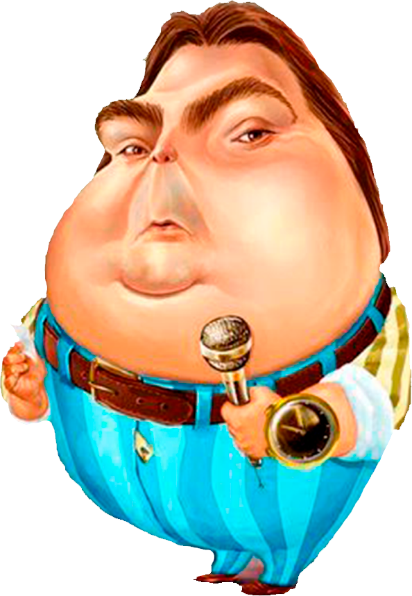

Nascimento: 2 maio 1950 Idade: 71 anos Profissão: Jornalista / Animador de TV e Rádio / apresentador
Cidade: Porto Ferreira - São Paulo Filho da professora Cordélia e do economista Maury Correa Silva,
Fausto é irmão da diretora de TV e autora de novela Leonor Correa. Ele também tem outras quatro irmãs
que seguiram carreira como educadoras. Ele começou sua carreira aos 15 anos de idade como repórter da
rádio Centenário, de Araras. Depois disso, passou pelas rádios Cultura, Campinas, Record, Jovem Pan
até finalmente chegar na rádio Globo.
Como jornalista, Fausto Silva, também trabalhou no jornal “O Estado de S. Paulo”. Contudo,
foi o memorável programa ‘Balancê’ que liderou a audiência da Rádio Excelsior no início da década de 1980,
que garantiu seu passaporte para a televisão.
Neste programa, Fausto Silva recebia grandes personalidades do rádio, televisão e teatro, bem como nomes
do humor como Nelson Tatá Alexandre e Carlos Roberto Escova.Após a sua excelente atuação neste programa
radiofônico, Fausto Silva passou a comandar o programa “Perdidos da Noite” na TV Gazeta. Posteriormente,
esta atração foi transferida para a Record, e depois para a TV Bandeirantes. Contudo, apesar do sucesso
no programa icônico, foi na Rede Globo que a carreira de Fausto Silva ganhou projeção nacional.
Então, em 1989, ele estreou o “Domingão do Faustão” onde completou mais de três décadas no ar.
Em poucos anos, Fausto Silva tornou seu programa dominical líder isolado de audiência, convertendo o
sucesso da atração em lucro para ele e para a emissora.
Com grande senso de humor e bastante irreverência, Fausto Silva conquistou os telespectadores brasileiros.
Além disso, com seus bordões famosos como “oloco meu” e “quem sabe faz ao vivo”, o apresentador criou a
própria identidade para a atração dominical.
Desse modo, os principais quadros do programa após sua estreia, eram a Academia do Faustão, Arquivo
Confidencial, Cadeira Elétrica e o Circo do Faustão. Em 1995, foi criado o quadro Melhores do Ano, que
premia até hoje o elenco da Globo com categorias que vão da Dramaturgia ao Jornalismo.
Como resultado, Fausto Silva se tornou um dos principais nomes da emissora e inclusive conseguiu desbancar
a audiência do Programa Silvio Santos, ao se firmar como líder do horário.

Em 1997, o Domingão do Faustão teve que se reinventar para lidar com o programa concorrente do SBT: o
Domingo Legal apresentado por Gugu Liberato (1959-2019). No entanto, a disputa não demandou muito esforço,
já que o programa estava consolidade com os famosos quadros como Arquivo Confidencial, Olimpíadas do
Faustão e as Videocassetadas.
Além disso, Fustão também ajudou a popularizar os karaokês com o Videokê, com a presença de famosos cantando
no palco, além de promover concursos como o Caminhão do Faustão e a escolha da “nova morena” do grupo É o
Tchan, que na época consagrou Scheila Carvalho.
Em 2005, outra novidade estreava no programa: a Dança dos Famosos. Assim, o novo quadro inspirado no
britânico Strictly Come Dancing se tornou um fenômeno, com 17 edições de salão e outras três no gelo. Por fim,
os quadros mais recentes do programa incluem Ding Dong e o Show dos Famosos, além dos outros quadros tradicionais.
Apesar do êxito na carreira e do retorno financeiro gerado pela apresentação do Domingão do Faustão na Globo,
o apresentador encerrou o contrato com a emissora, para retornar a Band em 2022.